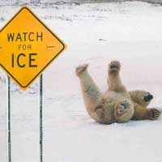

| |

Online Talks and Presentations:
Twists and Turns in Carbon Nanomaterials" (11/2024, Beilstein Talks)
Trapping Carbon Radicals, (Carb-On.fr meeting, Nov 2020).
A tale of ice and fire (Malcolm Heggie Memorial lectures, 2019).
Small can be Big - A French Cheesey Perspective (award-winning nano2hybrids video about nanoscale surface area! 2009)
Web video and articles in French:
Quel est l'intérêt des nanomatériaux ? (2015)
Ouest France: "Du simple exercice d'étudiant à la découverte"
Ouest France: "Leur logiciel est une histoire de famille".
Vega Science Trust
I worked for the trust for many years producing and distributing science TV and video, before becoming a Trustee.
nano2hybrids
Our video and text nanotechnology blog :
get unprecedented access to cutting edge research into nanotechnology, follow the development of our 3 year
project on metal-nanotube hybrids via documentaries and video on the web, meet the scientists, join the discussion, help shape
the future of European nanoscience! The blog is now closed unfortunately but the link still takes you to our videos.
Schools
I'm involved in lots of outreach work with schools, giving lectures, running workshops at the lab, organising science projects for 15-17 year olds, etc. In 2009-2010
I was involved in 3 school projects with classes of 15 year olds (two through Passeport Recherche,
you can hear the final Radio programme here and the students
website here), 1 school visit for 8 year olds with Les Petits Debrouillards, 6 TPE project students (15), and 1 TIPE project (17). Our lab also organises a busy
stand at the Tent in the Square every year in the middle of Nantes (during Fete de la Science).
The lab now has its own public science pages with videos,
interactive computer animations, etc.
Image Gallery
Selection of raytraced images from my research
Television
Productions
A list of programmes I have been involved with
Web
Sites
Links to Web sites I have designed and developed.
|
|